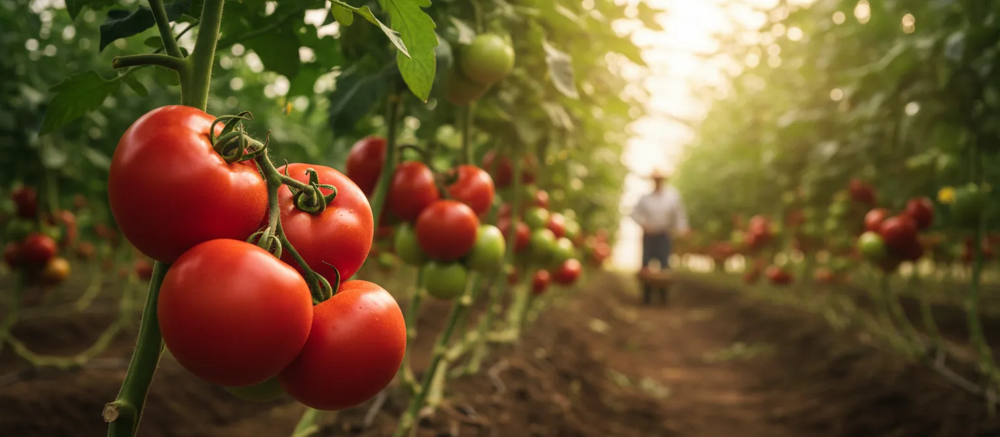
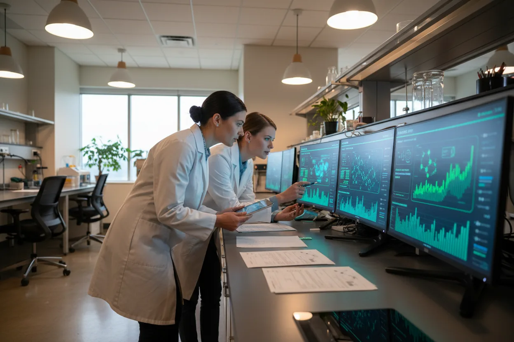

식품안전 및 품질정책
Food Safety and Quality Policy
풀무원은 건강한 먹거리와 지속 가능한 미래를 위해 한 걸음씩 나아가고 있습니다.
바른 먹거리
풀무원은 "바른 먹거리 원칙"을 바탕으로 식품 안전과 품질에 대한 확고한 약속을 지키며 건강한 삶과 지구 환경을 위해 노력하고 있습니다. 풀무원은 창사 이래 자연 친화적이고 건강한 제품을 제공하는 것을 최우선으로 삼아왔으며, 글로벌 식품 안전 기준에 따라 우리의 모든 제품이 신뢰할 수 있는 품질과 안전성을 제공하도록 최선을 다하고 있습니다.
Pulmuone Food Safety & Quality Policy
Mission
풀무원은 글로벌 식품안전기준과 품질기준을 준수하며, 지속적인 기술혁신으로 안전한 먹거리를 제공합니다.
식품안전 및 품질정책 세부 원칙
고객의 건강과 식품안전을 핵심가치로 삼고 있으며, 이를 위해 글로벌 식품안전 규정과 원칙을 준수하고 있습니다. 이 규정과 원칙은 생산단계부터 최종 소비자에 이르기까지 엄격히 적용되며, 모든 풀무원 제품은 관련 법률과 규제를 준수하여 제공됩니다.

PRIS
Pulmuone Regulation Integrate System
풀무원 법규 통합관리 시스템
법령과 기준 대비 부적합 사항을 자동화된 방식으로 검출하는 디지털 표시 심의 통합 관리 시스템을 시행하고 있습니다. 이를 통해 사전 예방적 유해물질 차단 및 정밀 원료 정보 감사를 이행합니다.